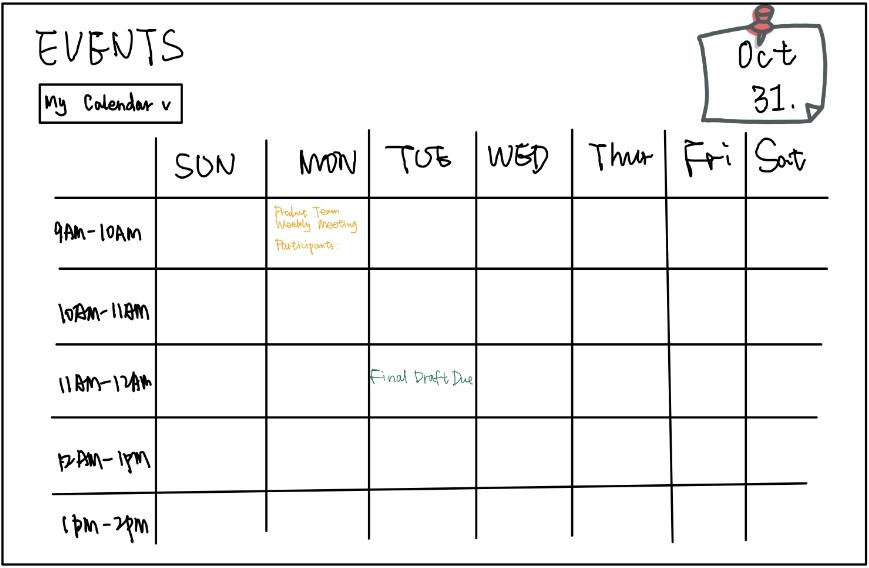
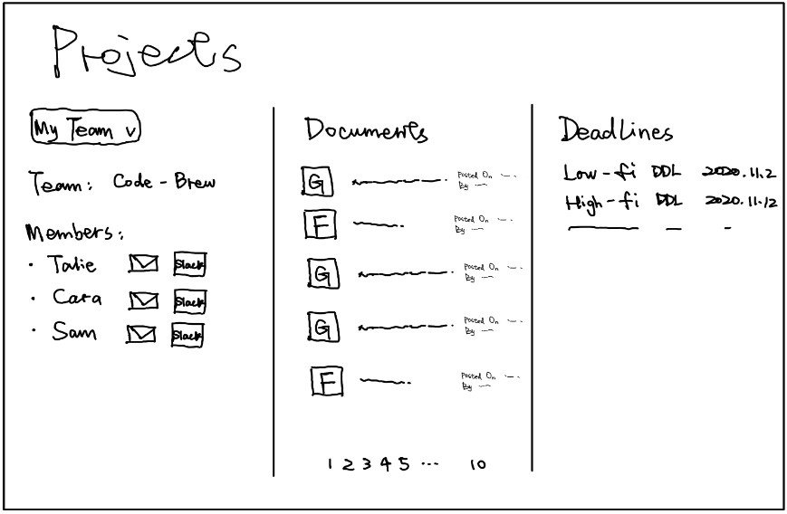

Overview
Startup of our choice--Gather--helps people and team coordinate with smart & automated communication by deep integration with Slack, so employees could connect with each other more easily with more streamlined message sending based on special events such as onboarding/offboarding, work anniversary, birthdays, etc.
In our design, we wish that the main functionalities be centered around two modules--workspace & personal dashboard.
Workspace: forming connections with company employees, automated slack message management system, team collaboration on projects.
Personal dashboard focuses on sorting out personal tasks and duties from workspace.
To release stress in the workplace, we want to use color palettes with low saturation colors, but have primary colors to highlight important messages. Increase organization and tidiness of layout, use hierarchical navbar.
Our inspiration of design (when brainstorming) comes from Slack, Notion, Trello, Cloze, and Facebook Workplace.
Sketches & Wireframes
We brainstormed 4 different sets of designs for the startup to reflect as wide a variety of layouts as possible to get the ideas flowing.


